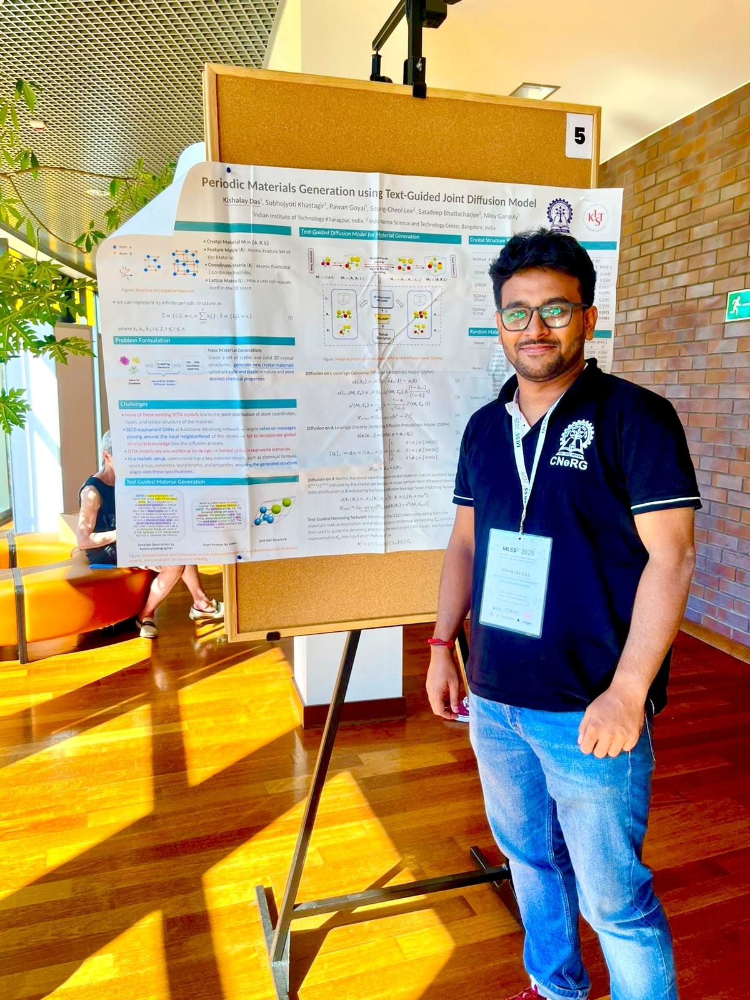

Postdoctoral Associate · Yale University
Kishalay Das
কিশলয় দাস · "tender new leaves of spring"
Krishnaswamy Lab, Yale University, New Haven, CT
Email: kishalay.msit@gmail.com
Hola! I'm a researcher working at the intersection of Graph Representation Learning, Geometric Deep Learning, and Generative Modeling, with a strong focus on AI for Science and AI for Medicine.

About
I am currently a Postdoctoral Associate at Yale University, working under the supervision of Smita Krishnaswamy.
Prior to this, I was a Prime Minister's Research Fellow (PMRF) at the Indian Institute of Technology, Kharagpur (2020–2026), as part of the Complex Networks Research Group (CNeRG), advised by Prof. Niloy Ganguly and Prof. Pawan Goyal.
I completed my M.Tech (2020) from the Department of Computer Science and Automation, IISc Bangalore, working with Prof. M. N. Murty on representation learning for graphs and hypergraphs. My B.Tech (2012) is from Meghnad Saha Institute of Technology, Kolkata.
Before academia, I gained industry and research experience at ISRO, Tata Consultancy Services, and Accenture.
I also create educational content on YouTube.
News
Academic Service
Contact
Feel free to reach out — I'm always happy to chat about research, collaborations, or anything in between.
- kishalay.msit@gmail.com
- Office
- Krishnaswamy Lab, Yale University
New Haven, CT, USA